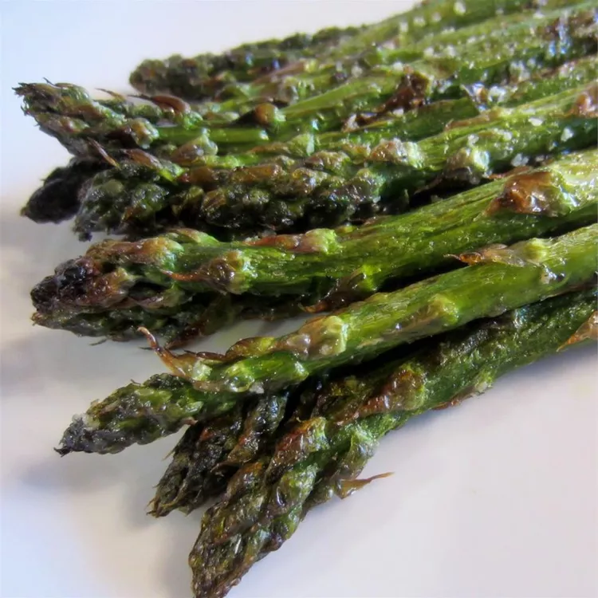

Grilled Asparagus

How to Grill Asparagus
Searching for the best summer side dish that comes together in minutes? Look
no further than this easy grilled asparagus that’s tossed in olive oil, seasoned
with salt and pepper, and grilled until perfectly tender.
Ingridients:
- Asparagus: Start with a pound of fresh, clean, trimmed asparagus.
- Oil: Olive oil keeps the asparagus from drying out and gives the seasonings something to stick to.
- Seasonings:This grilled asparagus is simply seasoned with salt and pepper.
Steps:
- Preheat an outdoor grill for high heat and lightly oil the grate.
- Lightly coat the asparagus spears with olive oil. Season with salt and pepper to taste.
- Cook asparagus on the preheated grill, turning often until lightly charred and fork-tender about 3 to 5 minutes.